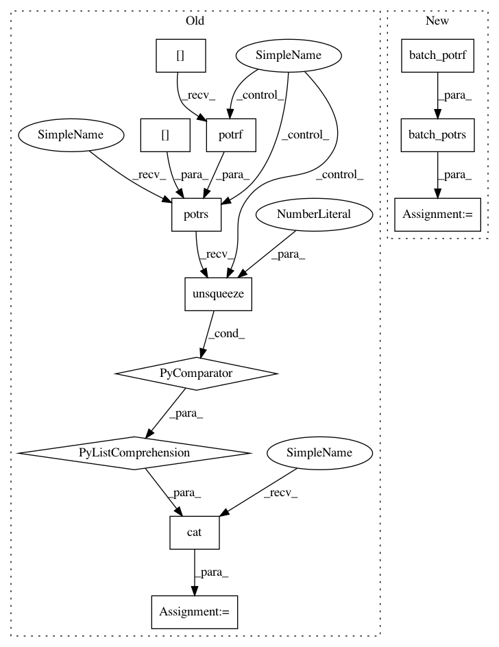

0cf477cb0fc956527b63d11638372c03dce1d1e6,gpytorch/utils/pivoted_cholesky.py,,woodbury_factor,#Any#Any#,102
Before Change
shifted_mat = shifted_mat + shifted_mat.new(k).fill_(1).diag()
if low_rank_mat.ndimension() == 3:
R = torch.cat(
[
torch.potrs(low_rank_mat[i], shifted_mat[i].potrf()).unsqueeze(0)
for i in range(shifted_mat.size(0))
]
)
else:
R = torch.potrs(low_rank_mat, shifted_mat.potrf())
return R
After Change
shifted_mat = shifted_mat + shifted_mat.new(k).fill_(1).diag()
if low_rank_mat.ndimension() == 3:
R = batch_potrs(low_rank_mat, batch_potrf(shifted_mat))
else:
R = torch.potrs(low_rank_mat, shifted_mat.potrf())
return R
In pattern: SUPERPATTERN
Frequency: 3
Non-data size: 12
Instances
Project Name: cornellius-gp/gpytorch
Commit Name: 0cf477cb0fc956527b63d11638372c03dce1d1e6
Time: 2018-05-22
Author: gpleiss@gmail.com
File Name: gpytorch/utils/pivoted_cholesky.py
Class Name:
Method Name: woodbury_factor
Project Name: cornellius-gp/gpytorch
Commit Name: 0cf477cb0fc956527b63d11638372c03dce1d1e6
Time: 2018-05-22
Author: gpleiss@gmail.com
File Name: test/util/test_linear_cg.py
Class Name: TestLinearCG
Method Name: test_batch_cg
Project Name: cornellius-gp/gpytorch
Commit Name: 0cf477cb0fc956527b63d11638372c03dce1d1e6
Time: 2018-05-22
Author: gpleiss@gmail.com
File Name: gpytorch/utils/pivoted_cholesky.py
Class Name:
Method Name: woodbury_factor
Project Name: cornellius-gp/gpytorch
Commit Name: 0cf477cb0fc956527b63d11638372c03dce1d1e6
Time: 2018-05-22
Author: gpleiss@gmail.com
File Name: test/util/test_linear_cg.py
Class Name: TestLinearCG
Method Name: test_batch_cg_with_tridiag